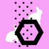

Project direction by professor: We’ve explored different ways that you can use the web for personal publishing, art, storage and reading. Now, let’s consider another difference between print and digital design – it’s live! Not only is it easy to change and update digital work, you also have access to an entire community of data and people. How can you create a website that changes, either with time or content? You can consider using a public API to generate part of the content, or find another solution to generate content that’s out of your control.
HTML, CSS, jQuery, API, Photoshop
5 weeks including getting feedbacks from professor, critique in class and spring break
(April 9th ~ May 8th, 2019)
1. Visual Presentation and Confirming the Concept
First I came up with different APIs: NASA Astronomy Picture Of the Day(APOD), Cooper Hewitt, and Currents news. After getting critic from classmates and professor Nika, I decided to use NASA APOD.
Through the second phase, I developed the idea further into using birthday data of user. I combined Zodiac signs and Glows by mousemove to make it more interactive. However this concept still doesn't convey strong ideas and only uses existing animation so I focused more on user's data, birthday and how I can make the users to engage with the website. As a result, I chose to create different geometric animations that are changed according to user's data.
2. Wireframe
Using sketch, I drew a rough wireframe for the website. The image above shows how the shapes are randomized by certain data.
3. Pattern design

To make more variations, I created a set of patterns which changes according to month.
4. Code
Finally, using jQuery, I randomized birthday input data within position, size of geometric shapes. Since the year data is too big to use, I only used the last two digits. Also because I can't use the input data before users type their birthday, I used weather API to change bottom patterns according to humidity.